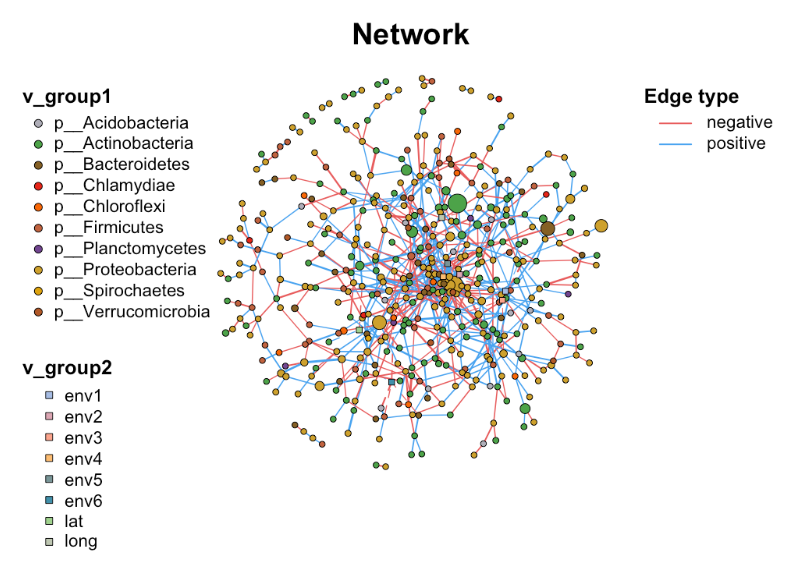
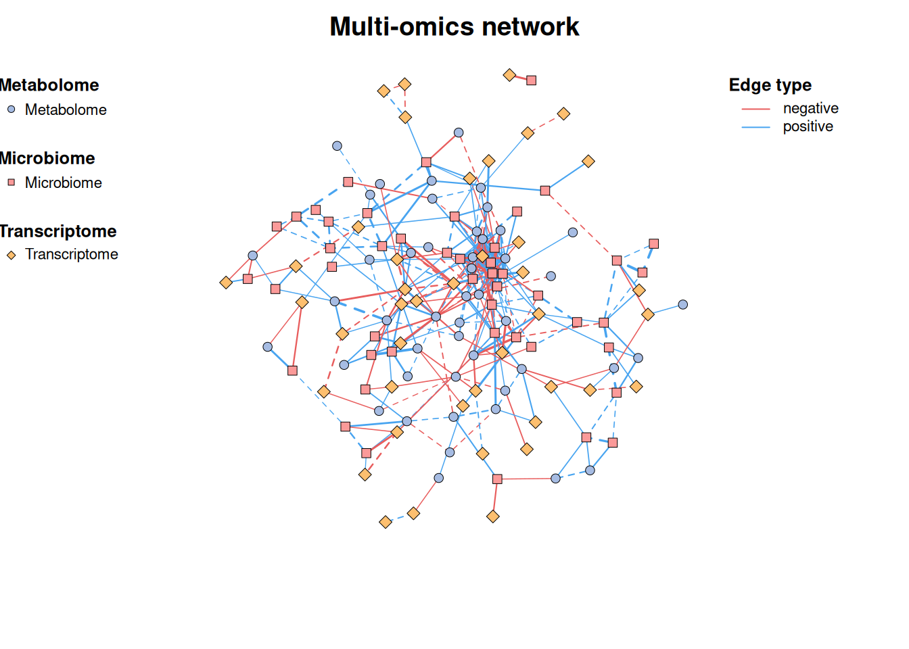
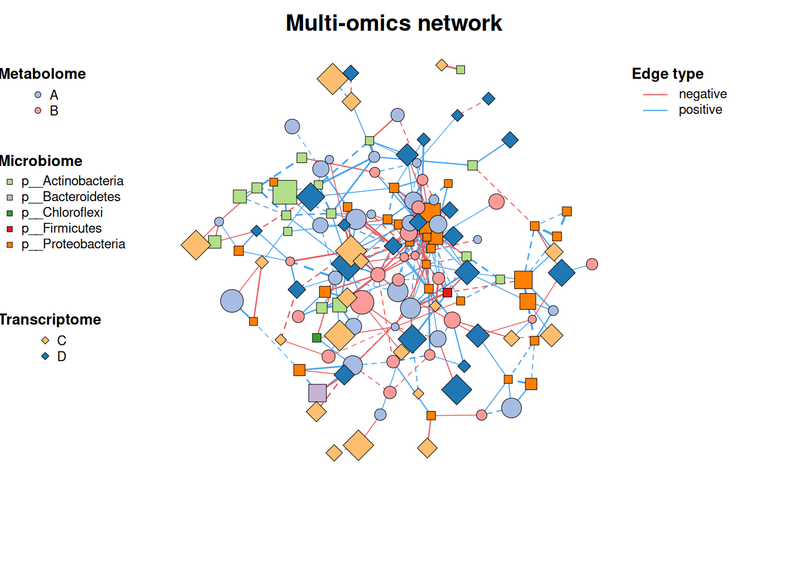
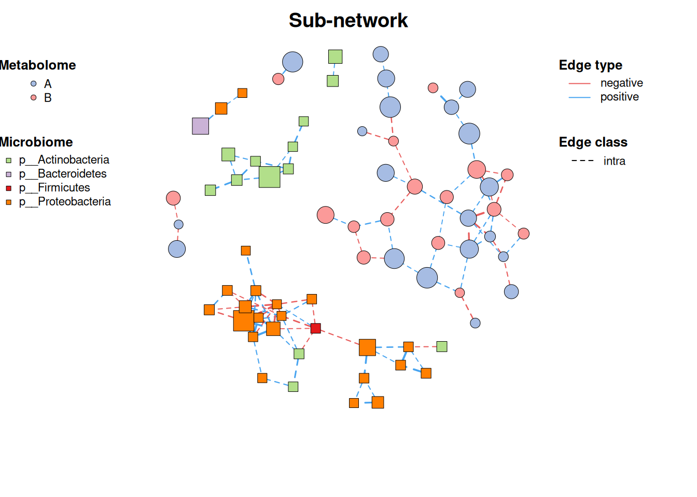
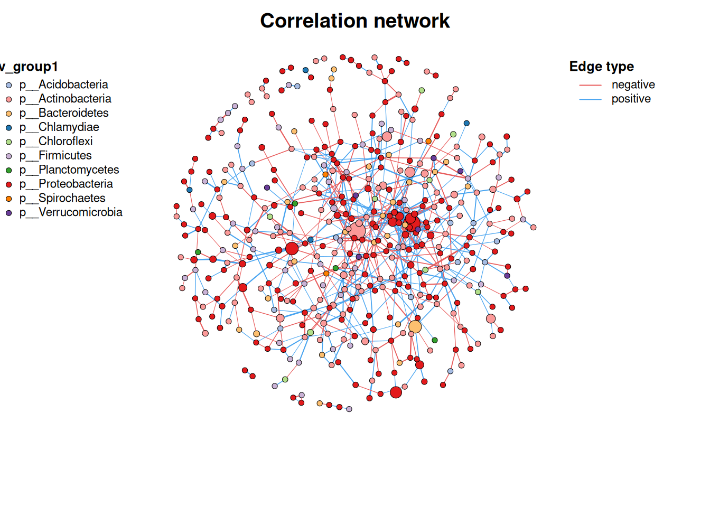
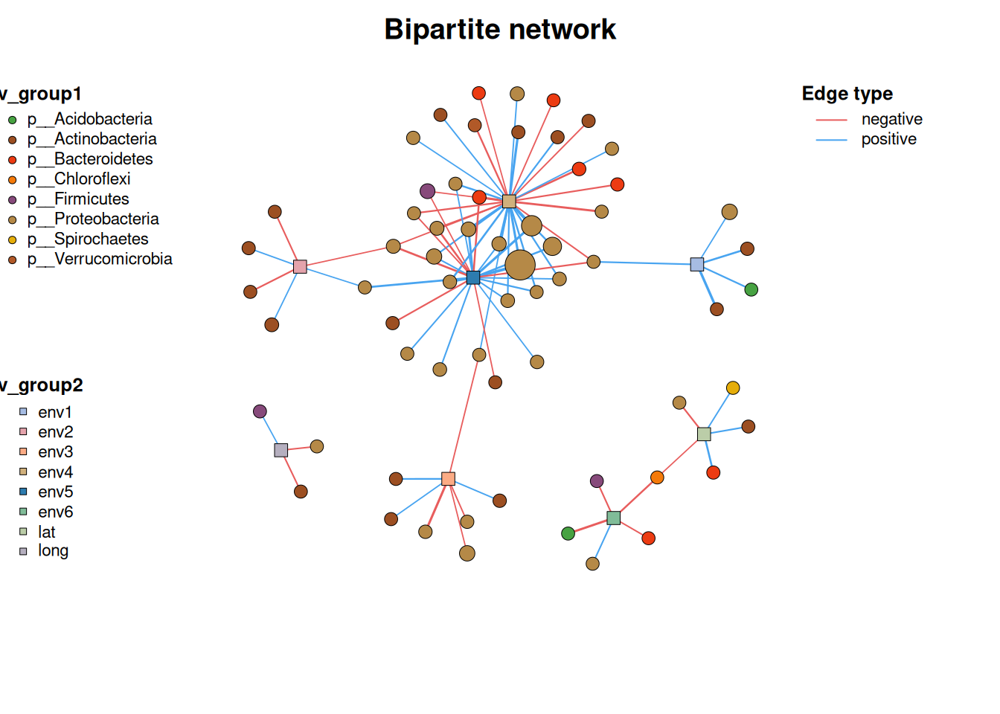
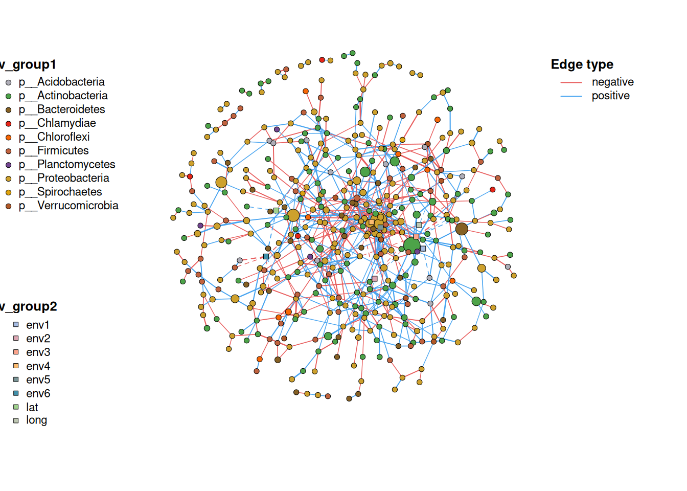

# 安装包
if (!requireNamespace("MetaNet", quietly = TRUE)) {
install.packages("MetaNet")
}
if (!requireNamespace("pcutils", quietly = TRUE)) {
install.packages("pcutils")
}
if (!requireNamespace("igraph", quietly = TRUE)) {
install.packages("igraph")
}
if (!requireNamespace("dplyr", quietly = TRUE)) {
install.packages("dplyr")
}
# 加载包
library(MetaNet)
library(pcutils)
library(igraph)
library(dplyr)网络图
在微生物组学研究中，理解微生物之间的相互作用至关重要。而网络分析作为一种强大的方法，能够帮助我们可视化和量化这些复杂关系。接下来向大家介绍 MetaNet 包的网络操作与注释功能，它能让我们的网络分析更加深入和直观。
示例

环境配置
系统要求： 跨平台（Linux/MacOS/Windows）
编程语言：R
依赖包：
MetaNet;pcutils;igraph;dplyr
数据准备
1. 导入数据
- 数据使用 pcutils 中的
otutab数据集 - MetaNet 是一个针对组学数据的综合网络分析 R 包
-
c_net_calculate()函数用于快速计算变量间的相关性 -
c_net_build()函数用于构建网络
data(otutab, package = "pcutils")
t(otutab) -> totu
c_net_calculate(totu, method = "spearman") -> corr
c_net_build(corr, r_threshold = 0.6, p_threshold = 0.05, delete_single = T) -> co_net
class(co_net) [1] "metanet" "igraph" 2. 获取网络属性
用 MetaNet 构建网络后，得到的是一个分类对象，它来自 igraph。意味着可以同时使用 MetaNet 的专有功能和 igraph 的通用功能。接下来了解如何获取网络的基本信息：
# 获取整体网络属性
get_n(co_net) n_type
1 single# 查看节点(顶点)属性
get_v(co_net) %>% head(5) name v_group v_class size
1 s__un_f__Thermomonosporaceae v_group1 v_class1 4
2 s__Pelomonas_puraquae v_group1 v_class1 4
3 s__Rhizobacter_bergeniae v_group1 v_class1 4
4 s__Flavobacterium_terrae v_group1 v_class1 4
5 s__un_g__Rhizobacter v_group1 v_class1 4
label shape color
1 s__un_f__Thermomonosporaceae circle #a6bce3
2 s__Pelomonas_puraquae circle #a6bce3
3 s__Rhizobacter_bergeniae circle #a6bce3
4 s__Flavobacterium_terrae circle #a6bce3
5 s__un_g__Rhizobacter circle #a6bce3### 查看边属性
get_e(co_net) %>% head(5) id from to weight
1 1 s__un_f__Thermomonosporaceae s__Actinocorallia_herbida 0.6759546
2 2 s__un_f__Thermomonosporaceae s__Kribbella_catacumbae 0.6742386
3 3 s__un_f__Thermomonosporaceae s__Kineosporia_rhamnosa 0.7378741
4 4 s__un_f__Thermomonosporaceae s__un_f__Micromonosporaceae 0.6236449
5 5 s__un_f__Thermomonosporaceae s__Flavobacterium_saliperosum 0.6045747
cor p.value e_type width color e_class lty
1 0.6759546 0.0020739524 positive 0.6759546 #48A4F0 e_class1 1
2 0.6742386 0.0021502138 positive 0.6742386 #48A4F0 e_class1 1
3 0.7378741 0.0004730567 positive 0.7378741 #48A4F0 e_class1 1
4 0.6236449 0.0056818984 positive 0.6236449 #48A4F0 e_class1 1
5 0.6045747 0.0078660171 positive 0.6045747 #48A4F0 e_class1 1这些函数返回的数据框包含了最基本的多组学生物网络的关键信息，如节点名称、分组、大小、边的权重等。 MetaNet 在构建网络时已经设置了一些内部属性（如v_group、v_class、e_type等），这些属性将影响后续的分析和可视化。
3. 为网络添加生物学意义
在微生物组研究中，仅有网络结构是不够的，我们需要整合分类学、丰度等生物学信息。MetaNet 提供了灵活的注释功能：
# 向节点添加分类信息
c_net_annotate(co_net, taxonomy["Phylum"], mode = "v") -> co_net1
anno <- data.frame("from" = "s__un_f__Thermomonosporaceae",
"to" = "s__Actinocorallia_herbida", new_atr = "new")
c_net_annotate(co_net, anno, mode = "e") -> co_net1在 MetaNet 中提供 c_net_set() 函数，它可以同时添加多个注释表并指定哪些列用于设置节点大小、颜色等属性：
Abundance_df <- data.frame("Abundance" = colSums(totu))
co_net1 <- c_net_set(co_net, taxonomy["Phylum"], Abundance_df)
co_net1 <- co_net
V(co_net1)$new_attri <- seq_len(length(co_net1))
E(co_net1)$new_attri <- "new attribute"
get_e(co_net1) %>% head(5) id from to weight
1 1 s__un_f__Thermomonosporaceae s__Actinocorallia_herbida 0.6759546
2 2 s__un_f__Thermomonosporaceae s__Kribbella_catacumbae 0.6742386
3 3 s__un_f__Thermomonosporaceae s__Kineosporia_rhamnosa 0.7378741
4 4 s__un_f__Thermomonosporaceae s__un_f__Micromonosporaceae 0.6236449
5 5 s__un_f__Thermomonosporaceae s__Flavobacterium_saliperosum 0.6045747
cor p.value e_type width color e_class lty new_attri
1 0.6759546 0.0020739524 positive 0.6759546 #48A4F0 e_class1 1 new attribute
2 0.6742386 0.0021502138 positive 0.6742386 #48A4F0 e_class1 1 new attribute
3 0.7378741 0.0004730567 positive 0.7378741 #48A4F0 e_class1 1 new attribute
4 0.6236449 0.0056818984 positive 0.6236449 #48A4F0 e_class1 1 new attribute
5 0.6045747 0.0078660171 positive 0.6045747 #48A4F0 e_class1 1 new attribute这样，就能获得一个既有统计意义又有生物学背景的网络信息。
可视化
1. 构建网络
简单多组学网络：包含微生物组，代谢组，转录组等信息。
# 基础网络图
data("multi_test", package = "MetaNet")
data("c_net", package = "MetaNet")
multi1 <- multi_net_build(list(Microbiome = micro, Metabolome = metab, Transcriptome = transc))
plot(multi1)
2. 添加 annotation
# 设置顶点类别
multi1_with_anno <- c_net_set(multi1,
micro_g, metab_g,
transc_g,
vertex_class = c("Phylum", "kingdom", "type"))
# 设置顶点大小
multi1_with_anno <- c_net_set(multi1_with_anno,
data.frame("Abundance1" = colSums(micro)),
data.frame("Abundance2" = colSums(metab)),
data.frame("Abundance3" = colSums(transc)),
vertex_size = paste0("Abundance", 1:3))
plot(multi1_with_anno)
3. 筛选子网络
# 筛选子网络
data("multi_net", package = "MetaNet")
multi2 <- c_net_filter(multi1_with_anno, v_group %in%
c("Microbiome", "Metabolome")) %>%
c_net_filter(., e_class == "intra", mode = "e")
plot(multi2, lty_legend = T, main = "Sub-network") 
4. 合并网络
# 网络1
data("c_net")
plot(co_net)
# 网络2
data("c_net")
plot(co_net2)
# 合并网络
co_net_union <- c_net_union(co_net, co_net2)
plot(co_net_union)
MetaNet 包为微生物网络分析提供了全面的工具集，从基础的网络构建到高级的注释与可视化。通过灵活使用这些功能，我们能够从复杂的微生物组数据中提取有意义的生物学模式，为理解微生物群落结构与功能提供新视角。
参考文献
[1] K. Contrepois, S. Wu, K. J. Moneghetti, D. Hornburg, et al., [Molecular Choreography of Acute Exercise (https://doi.org/10.1016/j.cell.2020.04.043). Cell. 181, 1112–1130.e16 (2020).
[2] Y. Deng, Y. Jiang, Y. Yang, Z. He, et al., Molecular ecological network analyses. BMC bioinformatics (2012), doi:10.1186/1471-2105-13-113.
[3] K. Faust, J. Raes, Microbial interactions: From networks to models. Nature Reviews Microbiology (2012), doi:10.1038/nrmicro2832.
[4] Chen Peng (2025). MetaNet: Network Analysis for Omics Data. R package